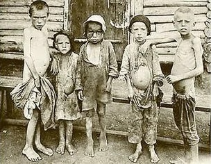
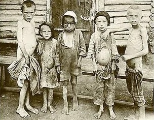
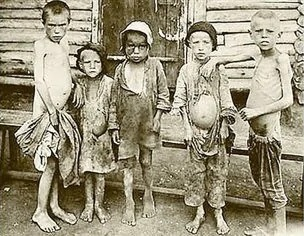

While all of these points in history are horrific and show the true horrors of starvation, not all hunger genocides have the same intentions, and the Ukranian Holodomor really brings this to light as opposed to mere policies in British India. The Holodomor was a planned wipeout of thousands of Ukranians, by purposefully starving them of all their crops, nutrients, and more. Gareth Jones brought these horrors to light in his documentations, as he personally went through Soviet Ukraine to witness everything first-hand. His reports directly challenged the Soviets' denial of the famine's existence, in which he was promptly banned from entering again. Fortunately, Jones's writings made the world see this as a genocide caused by the Soviets, leaving distaste around the globe. Jones's risks talking to peasants unsupervised led to a very important documentation in history.
